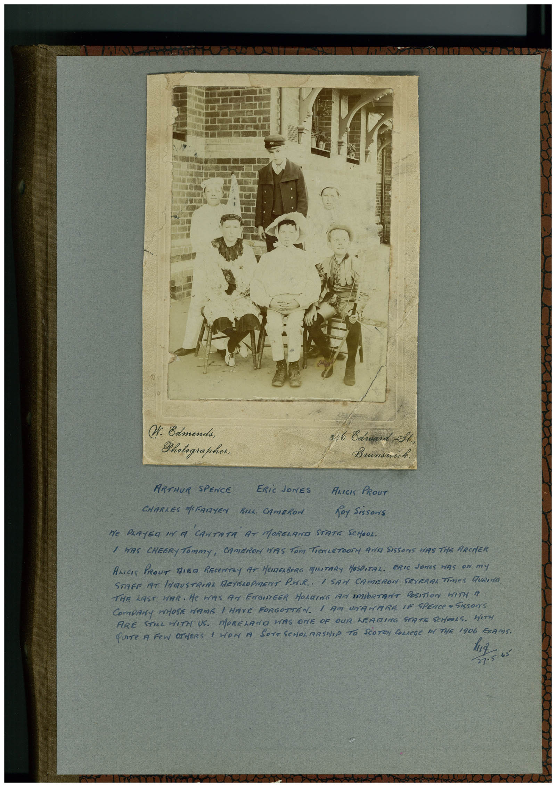

Book 1 · scan 162


Description
Transcription
Context
Review notes
Compare the machine draft with the scan. Handwriting and names need human review.
Artifacts
Edit the artifacts field in this note’s frontmatter to change these records. This summary is generated.
B01-S162-A01 — Photo & Handwritten note — Book 1, scan 162
Types: Photo, Handwritten note
Scope: Whole scanned page; individual items can be split out during review.
Caption: Not mapped yet.
Caption source: Not recorded yet.
Caption status: unmapped
Machine transcription
W. Edmenda, Photographer. 846 Cárard St ARTHUR SPENCE ERiC JONES ALICIS PROUT CHARLES MOFARTEN BILL. CAMERON foy Sissons Ne PeRTEa In A 'CANTATA AT MORELANO STATE SCHOOL. / WAS CHEERY TOmmY, CAMERON HAS TOm TiCKLETOOTH AND SISSOrS WiS THe ARCHER ALICK PROUT TiER RECENTLy AT HeIMERBeRG MATARY HOSPITAL. ERIC JONeS HAS ON mY STAFF 19T LNMUSTRIAL DEYSROPMENT PUR. I SAM CAMERON SEVERAL TIMES FURING THE LAST HAR. He MAS AN ENGIVEER HOLDING TAr SMORTANT POSITiON WITH A COMPANy WHOSE NAME I HAVE FORGOTTEN. I AM UNAHARE IF SPENCE " SIsSONS ARE STILL HITH US. MORELAND HAS ONE OF OUR LEADING STATE SCrOOLS. HITH QUITe A FEW OTHERS 1 WON A SOrT SCHOLARSHIP TO SCOTCy COLLeGe IN THE 1906 ExAMS. 27-5.65